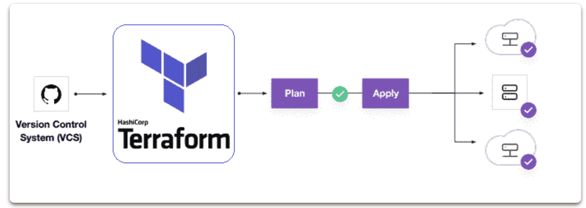
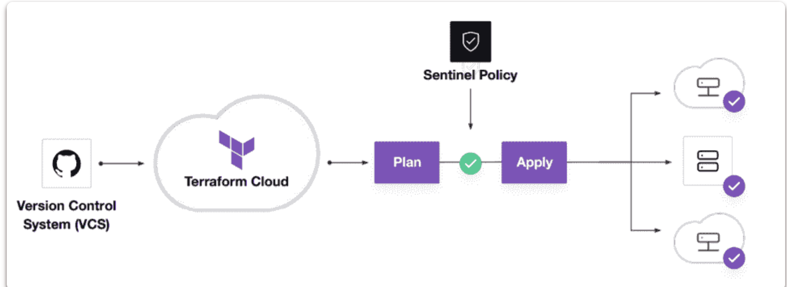
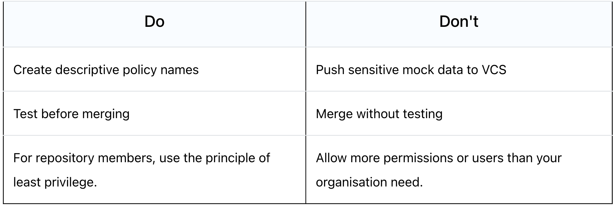

6 Top Terraform Interview Questions and Answers (2022)

1 What is Terraform?
Terraform is a tool for creating, updating, and versioning infrastructure securely and efficiently.
Terraform is capable of managing both current and popular service providers, as well as custom in-house solutions.
Configuration files notify Terraform which components are required to run a single application or an entire datacenter.
Terraform helps you Manage All of Your Infrastructure as Infrastructure as Code and promote Self-Service Infrastructure allows you to construct infrastructure as needed :
- Terraform code is written in the HCL programming language.
- Stop constructing things by hand.
- Put everything into a Terraform setup that can be repeated.
- All of the build steps are now written in code.
- It's a lot easier if you ever have to rebuild something!
2 What are the key features of Terraform
Below are the key features of Terraform:
- Infrastructure as Code: A high-level configuration syntax is used to define infrastructure.
- Execution Plans: Terraform generates an execution plan during the "planning" phase.
- Resource Graph
- Change Automation
3 What are most useful terraform commands?
Below are the key commands of Terraform:
terraform init # Initialize the current directory
terraform plan # Dry run to see what Terraform will do
terraform apply # Apply the Terraform code and build stuff
terraform destroy # Destroy what was built by Terraform
terraform refresh # Refresh the state file
terraform output # View Terraform outputs
terraform graph # Create a DOT-formatted graph
4 What is Terraform Cloud
Terraform Cloud is a hosted application that includes remote state management, API-driven runs, policy management, and other capabilities.
Many users prefer a SaaS solution that is hosted in the cloud since they do not want to manage the infrastructure required to run it.
5 What is Terraform Cloud for Business
Terraform Cloud for Business uses the same hosted environment as Terraform Cloud, but with additional features for larger teams. Single sign-on, audit logging, and the ability to Terraform on-premise resources from the cloud are just a few of the features available.
6 What is Terraform Enterprise
Terraform Enterprise is the same tool, but it runs in your own data centre or cloud environment.
Some users want more control over the Terraform Cloud application, or they want to execute it behind corporate firewalls in restricted networks.
7 What is module in terraform?
A module is a container for several resources that are used in conjunction with one another. Modules can be used to construct lightweight abstractions, allowing you to define the infrastructure in terms of architecture instead of physical objects.
模块是多个资源的容器，这些资源相互结合使用。模块可用于构建轻量级抽象，允许您根据架构而不是物理对象来定义基础架构。
A Terraform module is a set of Terraform configuration files contained within a single directory.
Or a basic configuration with a single directory having one or more .tf file is a module. When Terraform commands are run directly from such a directory, it is referred to as the root module.
In this way, each Terraform configuration is a module. You may have a basic collection of Terraform configuration files like:
.
|--- LICENSE
|--- README.md
|--- main.tf
|--- variables.tf
|--- output.tf
8 What is Private Module Registry?
Terraform Cloud provides a Private Module Registry, which allows you to store, version, and distribute modules to your organisations and teams.
9 What is main TF in terraform?
main.tf contains the primary configuration for your module.
You can also build additional configuration files and arrange them in some helpful way for your project.
Variable definitions for your module will be stored in variables.tf.
10 How do you call a main TF module?
When you run terraform plan or terraform apply, the.tf files in your working directory combine to form the root module.
This module will call other modules and bind them by transferring output values from one to input values from another.
11 What language does terraform use?
Terraform configuration syntax is known as HashiCorp Configuration Language (HCL). It is designed to be both human-readable and editable, as well as machine-friendly.
Terraform can also read JSON configurations for machine-friendliness.
12 How does terraform integrate with github and public cloud?
The majority of businesses are migrating to the public cloud. Managing infrastructure in a secure and controlled manner is a critical step for businesses.
13 What is Terraform State?
Terraform keeps track of the resources it has created in a state file.
This crucial file contains all of the information Terraform requires to change, update, and delete infrastructure.
The state file is saved in your local workspace by default. We can use Terraform Cloud to store the state file as a Remote State on the cloud.
14 What are the disadvantages of maintaining the Terraform state file on the local machine?
- State file sometimes contains secrets or sensitive data may be exposed
- We are unable to collaborate with the team because the file is on someone's laptop.
- On a local machine, there is a possibility of losing or deleting the state file.
- There is no centralised record keeping to track historical developments.
15 What exactly is Sentinel?
Sentinel is the policy enforcement language used by HashiCorp. Sentinel policies are validated when the Terraform plan is executed. Sentinel will detect incorrect settings before they reach production, not later.

We can choose the scope of Sentinel policies that will be enforced at the Organization or Workspace level.
# Restricting region in GCP
google_region_valid = rule {
all region_values as rv {
rv == "us-west-1"
}
}
16 What exactly do you mean when you say Policy-as-Code?
- Treat policies as applications
- Store in version control
- Proactive vs. reactive
- Automate enforcement and review
- Automate logic testing
17 Can you provide few examples where we can use for Sentinel policies?
Sentinel is a powerful tool that can be used to implement a variety of policies. Here are a few examples:
Security Standards
- Forbid or allow only certain resources, providers or data sources
- Restrict roles the cloud provider can assume
- Restrict roles the cloud provider can assume
Audit Tracking
- Review an audit trail for Terraform Cloud operations
- Enforce explicit ownership in resources
Resource Restriction
- Limit the size of VMs and clusters for cost
- Enforce mandatory tagging on resources built with Terraform
- Restrict modules to your organizations Private Module Registry
18 What are the various levels of sentinel enforcement?
Sentinel is a powerful tool that can be used to implement a variety of policies. Here are a few examples:
Advisory
- Logged but allowed to pass
- When a user triggers a plan that violates the policy, an advisory is issued to the user.
Soft-Mandatory
- Teams based permissions for overrides
- Overrides logged for audit if the policy fails
- Prevents non-compliant infrastructure from being deployed by regular users. Only administrators have the ability to overrule.
Hard-Mandatory
- Default enforcement level
- The policy must pass
- Only way to override is to explicitly remove the policy
- Prevents non-compliant infrastructure from being deployed by all users and apps.
19 Why write tests for Sentinel policies?
- Policies and infrastructure are prone to change for refactoring.
- Writing tests assures that your policy will continue to work as intended even if things change.
- Writing testing instils trust in the policymaking process.
20 What are best practices in Policy Repo Management?

21 How to Store Sensitive Data in Terraform?
In order to communicate with your cloud provider's API, Terraform requires credentials.
Although config files and environment variables are a preferable alternative, the credentials are still saved in plaintext on your desktop.
Sensitive Variable is Secure Place for API Credentials : Terraform Cloud can securely store and encrypt your passwords. This encrypted storage can be used to store passwords, TLS certificates, SSH keys, and anything else that shouldn't be stored in plain text.
22 Explain what Terraform is and how does it works
Terraform.io: "Terraform is an infrastructure as code (IaC) tool that allows you to build, change, and version infrastructure safely and efficiently."
23 Why one would prefer using Terraform and not other technologies? (e.g. Ansible, Puppet, CloudFormation)
The benefits of Terraform over the other tools:
- It follows the immutable infrastructure approach which has benefits like avoiding a configuration drift over time
- Ansible and Puppet are more procedural (you mention what to execute in each step) and Terraform is declarative since you describe the overall desired state and not per resource or task.
- You can give the example of going from 1 to 2 servers in each tool. In Terraform you specify 2, in Ansible and puppet you have to only provision 1 additional server so you need to explicitly make sure you provision only another one server.
24 How do you structure your Terraform projects?
terraform_directory providers.tf -> List providers (source, version, etc.) variables.tf -> any variable used in other files such as main.tf main.tf -> Lists the resources
25 True or False? Terraform follows the mutable infrastructure paradigm
False. Terraform follows immutable infrastructure paradigm.
26 True or False? Terraform uses declarative style to describe the expected end state
True
27 What is HCL?
HCL stands for Hashicorp Configuration Language. It is the language Hashicorp made to use as the configuration language for a number of its tools, including terraform.
Terraform - Resources
What is a "resource"?
"Terraform uses resource blocks to manage infrastructure, such as virtual networks, compute instances, or higher-level components such as DNS records. Resource blocks represent one or more infrastructure objects in your Terraform configuration."
Explain each part of the following line: resource "aws_instance" "web_server" {...}
- resource: keyword for defining a resource
"aws_instance": the type of the resource"web_server": the name of the resource
What is the ID of the following resource: resource "aws_instance" "web_server" {...}
aws_instance.web_server
How would you enforce users that use your variables to provide values with certain constraints? For example, a number greater than 1
Using validation block
variable "some_var" {
type = number
validation {
condition = var.some_var > 1
error_message = "you have to specify a number greater than 1"
}
}
The same variable is defined in the following places:
- The file
terraform.tfvars - Environment variable
- Using
-varor-var-file
What terraform.tfstate file is used for?
It keeps track of the IDs of created resources so that Terraform knows what it's managing.
How do you rename an existing resource?
terraform state mv
Mention some best practices related to tfstate
- Don't edit it manually. tfstate was designed to be manipulated by terraform and not by users directly.
- Store it in secured location (since it can include credentials and sensitive data in general)
- Backup it regularly so you can roll-back easily when needed
- Store it in remote shared storage. This is especially needed when working in a team and the state can be updated by any of the team members
- Enabled versioning if the storage where you store the state file, supports it. Versioning is great for backups and roll-backs in case of an issue.
What is a "tainted resource"?
It's a resource which was successfully created but failed during provisioning. Terraform will fail and mark this resource as "tainted".
What terraform taint does?
**terraform taint resource.id manually marks the resource as tainted in the state file. **
So when you run terraform apply the next time, the resource will be destroyed and recreated.
What is a data source? In what scenarios for example would need to use it?
Data sources lookup or compute values that can be used elsewhere in terraform configuration.
There are quite a few cases you might need to use them:
- you want to reference resources not managed through terraform
- you want to reference resources managed by a different terraform module
- you want to cleanly compute a value with typechecking, such as with
aws_iam_policy_document
Explain "State Locking"
State locking is a mechanism that blocks an operations against a specific state file from multiple callers so as to avoid conflicting operations from different team members. Once the first caller's operation's lock is released the other team member may go ahead to carryout his own operation. Nevertheless Terraform will first check the state file to see if the desired resource already exist and if not it goes ahead to create it.
状态锁定是一种阻止来自多个调用者对特定状态文件的操作的机制，以避免来自不同团队成员的冲突操作。一旦第一个调用者的操作的锁被释放，其他团队成员就可以继续执行他自己的操作。尽管如此，Terraform 将首先检查状态文件以查看所需资源是否已经存在，如果不存在，则继续创建它。
What is Terraform import?
Terraform import is used to import existing infrastructure. It allows you to bring resources created by some other means (eg. manually launched cloud resources) and bring it under Terraform management.
How do you import existing resource using Terraform import?
- Identify which resource you want to import.
- Write terraform code matching configuration of that resource.
- Run terraform command
terraform import RESOURCE ID
Let's say you want to import an aws instance. Then you'll perform following:
- Identify that aws instance in console
- Refer to it's configuration and write Terraform code which will look something like:
resource "aws_instance" "tf_aws_instance" {
ami = data.aws_ami.ubuntu.id
instance_type = "t3.micro"
tags = {
Name = "import-me"
}
}
Run terraform command terraform import aws_instance.tf_aws_instance i-12345678